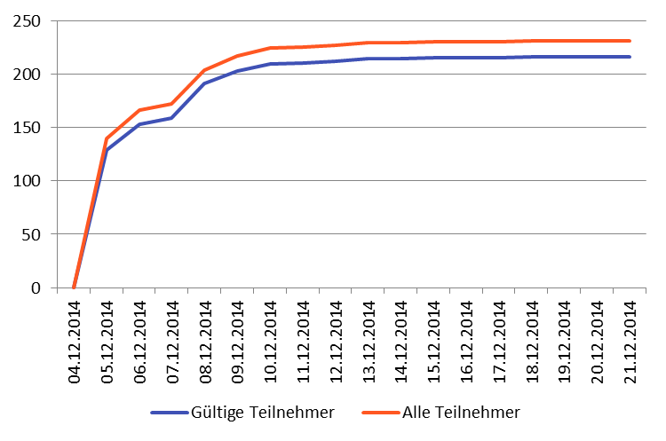

Ein Projekt des Kurses WWI2012F
5. Semester Duale Hochschule Baden-Württemberg Stuttgart
Abschlusspräsentation am 02.02.2015
Marketing

Quelle: http://www.professionalacademy.com/media/images/social-media-marketing-spout.jpg
Zielsetzung
Unterstützungsfunktion
- Datenbeschaffung für Inbetriebnahme
- Klärung rechtlicher Fragen
- Erarbeitung Marketingkonzept und Marketingstrategie
Methodik

Arbeitspakete
- Planung und Konzept
- Datenbeschaffung
- Name und Slogan
- Rechtliche Aspekte
- Erstellung, Konzeption und Durchführung Umfrage I
- Erstellung, Konzeption und Durchführung Umfrage II
- Social Media Marketingkonzept
- Klassische Medien Marketingkonzept
2. Datenbeschaffung
- Definition Format der Daten
- Datensammlung
- Datenpflege
- Bilderbeschaffung
3. Name und Slogan
OR DIE TRYIN'
4. Rechtliche Aspekte
- Impressum
- Datenschutz und Copyright
- Anzeigeanforderungen Bewertungsportal
5. Erstellung, Konzeption und Durchführung von Umfrage I
- Umfrage zur Durchführung einer Marktanalyse
- Impulse zur Erstellung der Web-Applikationen
- Ergebnisse bei den Marketingstrategien beachten
5. Erstellung, Konzeption und Durchführung von Umfrage I

6. Erstellung, Konzeption und Durchführung von Umfrage II
- Umfrage zur Überprüfung der bisherigen Zwischenergebnisse
- Design und Funktionen der Web-Applikation
- Feedback zu umgesetzten Funktionen und dem Design
6. Erstellung, Konzeption und Durchführung von Umfrage II

7. Social Media Marketingkonzept
- Ziele & Zielgruppe
- Multiplikation der Bekanntheit der Anwendung und Dialog mit den bestehenden Nutzern
- Frauen und Männer aus Stuttgart und der Umgebung, welche aktiv auf mindestens einem sozialen Netzwerk sind
- Plattformen & Aktionen
- Facebook & Twitter
- #GoHappy als Aggregator
- Kooperation mit Barbesitzern
- Animation der Nutzer zum Teilen von Erlebnissen
8. Klassische Medien Marketingkonzept
- Umfrageergebnisse dienen als Grundlage
- Produktpolitik
- Preispolitik
- Vertriebspolitik
- Kommunikationspolitik
- Über Umfragen
- klassische Mediawerbung:
- Werbung in Printmedien
- Radiowerbung
- Außenwerbung
- Werbeartikel
Layout Flyer/Plakat